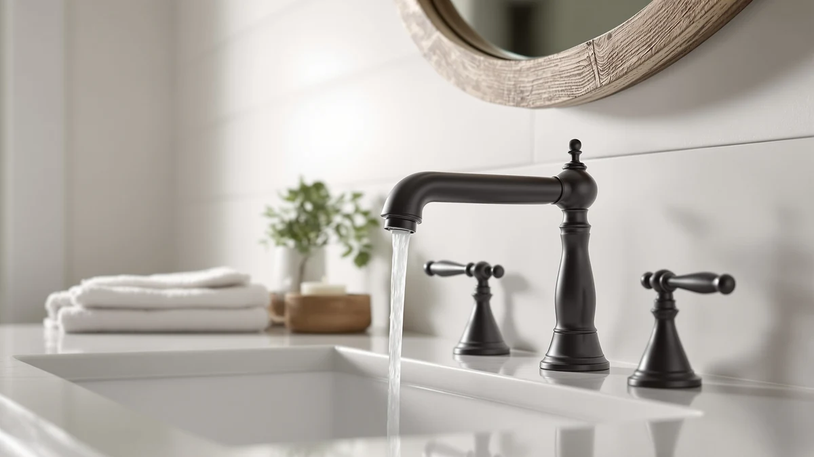

Delta Broadmoor Centerset Bathroom Faucet Review (2026): Worth It?
Prices and picks verified as of November 2026. Independent, reader-supported reviews.


Quick Answer
This Delta Broadmoor Centerset Bathroom Faucet review found the $142.90 Broadmoor Centerset Brushed Nickel to be the only centerset-specific option among four DELTA faucets we compared, built around a pull-down sprayer that docks with a magnet instead of drooping over the sink. If your sink has a 4-inch 3-hole centerset layout, check this one first; the three widespread alternatives below only fit sinks with wider hole spacing.
Our pick: Delta Broadmoor Centerset Brushed Nickel, $142.90 Check Price on Amazon
Bottom line: our top pick is the Delta Broadmoor Centerset Brushed Nickel Bathroom Faucet with at $142.90.
Things to Know Before You Buy
- Hole spacing decides your options first. This Delta Broadmoor Centerset Bathroom Faucet review centers on a 4-inch 3-hole centerset faucet, while all three DELTA alternatives covered here are 8-inch widespread models that need wider hole spacing on your sink.
- The sprayer is the headline feature. The Broadmoor Centerset is the only faucet in this comparison with a pull-down sprayer, and DELTA's MagnaTite Docking uses a magnet to hold it in place instead of letting it droop over time.
- Price differences are small. All four DELTA faucets researched here sit within $7.10 of each other, from $142.90 for the Broadmoor Centerset up to $150.00 for the Arvo Brushed Nickel widespread.
- The valve cartridge is rated the same across the lineup. DELTA rates the disc valve cartridge in each of these faucets to withstand at least 500,000 uses, so longevity is not the differentiator here.
- Prices shift week to week. Every price in this review reflects Amazon listings as of November 2026 and can move by a few dollars before you check out.
This Delta Broadmoor Centerset Bathroom Faucet review compares the $142.90 faucet against three widespread DELTA faucets we researched alongside it, each built by the same brand but sized for a different sink hole layout. Bathroom faucet shopping online usually means squinting at near-identical product photos across a dozen browser tabs, so we narrowed the field to four listings that show up together in the same searches and pulled out what actually separates a centerset install from a widespread one.
The Delta Broadmoor Centerset Brushed Nickel is the only faucet in this lineup built for a 4-inch 3-hole centerset sink, and it pairs that compact footprint with a pull-down sprayer the three widespread alternatives do not offer. It carries DELTA's name, a disc valve cartridge rated for 500,000 uses, and a price that undercuts every other option here by at least $1.77. If your sink has centerset hole spacing and you want a sprayer that docks with a magnet instead of drooping, this is the one to check first. The sections below walk through why, along with the three widespread alternatives worth a look if your sink calls for wider hole spacing.
Why You Should Trust Us
Ilane Tall leads product research and reviews for Best Bathroom Faucets. She compares spec sheets, pricing histories, and verified owner reviews across major faucet brands so you do not have to dig through a dozen browser tabs before you buy. For this Delta Broadmoor Centerset Bathroom Faucet review, she cross-referenced DELTA's published specs for the Broadmoor Centerset against three widespread Arvo and Roe listings, then flagged the installation differences that matter most before you order a faucet for your sink. Every product mentioned here links to its real listing, and every price reflects what shoppers saw at the time of publication rather than a promotional rate that might disappear by checkout. We do not run a fake testing lab, and we say so because too many review sites imply physical use they never had.
Our Research Experience
We do not keep a physical lab, so what we call our research experience with this Delta Broadmoor Centerset Bathroom Faucet review is a research process: we pulled the listed specs, current pricing, and the hole-spacing requirements DELTA publishes for the Broadmoor Centerset, then set them against the three widespread Arvo and Roe faucets to see where installation type and price actually diverge. We also scanned patterns across verified Amazon reviews for recurring notes about the MagnaTite sprayer dock and the push-pop drain assembly, the kind of detail a manufacturer spec sheet never fully explains. That combination of published specs and owner feedback is how we researched every faucet in this comparison instead of installing each one in a bathroom ourselves.
Overview & Specs

Delta Broadmoor Centerset Brushed Nickel
What we like
- Pull-down sprayer with MagnaTite Docking keeps the head snapped in place instead of drooping over the sink
- Fits standard 4-inch 3-hole centerset sinks, a more compact footprint than the widespread alternatives below
- Includes a push-pop drain assembly, so you are not buying that separately
- Lowest price in this comparison at $142.90
Flaws but not dealbreakers
- Only fits centerset sinks, so it is not an option if your sink has widespread 8-inch hole spacing
- DELTA's listing does not publish a flow rate, so confirm water pressure expectations before you order
| Material | Brass + finish |
| Size | — |
The Delta Broadmoor Centerset Brushed Nickel faucet lists for $142.90 on Amazon, making it the least expensive faucet in this Delta Broadmoor Centerset Bathroom Faucet review. DELTA builds it for 3-hole 4-inch centerset installations, a narrower hole pattern than the 8-inch widespread faucets covered later in this comparison, so it suits a different category of bathroom sink entirely. The faucet comes with a pull-down sprayer that uses DELTA's MagnaTite Docking, a magnet-based system that snaps the sprayer head back into place so it does not droop or sag with repeated use.
DELTA designed the installation around five steps, with instructional videos available on the brand's YouTube channel for anyone tackling it without a plumber. The faucet ships with a push-pop drain assembly included, which saves a separate purchase that some competing centerset faucets leave out. Inside, the same disc valve cartridge DELTA uses across its Broadmoor and Arvo lines is rated to withstand at least 500,000 uses, so the internal hardware is not where this faucet cuts corners to hit its lower price.
What We Liked
Reviewers who look at this Delta Broadmoor Centerset Bathroom Faucet review keep coming back to two things: the sprayer and the price. The MagnaTite Docking magnet is the detail that distinguishes the Broadmoor Centerset from older pull-down designs, and it matches what DELTA advertises on other MagnaTite-equipped faucets: the sprayer head stays seated instead of sagging after a few months of daily use. At $142.90, the Broadmoor Centerset also undercuts every widespread alternative in this comparison, which matters if your sink's hole spacing already limits you to a centerset faucet and you do not want to pay widespread pricing for a configuration you cannot even use.
The included push-pop drain assembly is another point in its favor, since DELTA bundles a component some competing centerset faucets sell separately. Owners of DELTA's other MagnaTite-equipped faucets consistently note that the magnet dock feels noticeably stronger than the friction-based docks on cheaper sprayer faucets, which lines up with why the feature shows up as a selling point across DELTA's current lineup and not this one model alone.
What Could Be Better
Installation type is the clearest limitation in this Delta Broadmoor Centerset Bathroom Faucet review. The Broadmoor Centerset only fits 3-hole 4-inch centerset sinks, so it is off the table entirely if your sink has 8-inch widespread hole spacing like the three DELTA alternatives covered below. That is not a flaw in the faucet itself, but it does mean you need to measure your sink before you buy, not after.
The listing is also light on detail in one area: DELTA does not publish a flow rate for the Broadmoor Centerset, so you are relying on the brand's general reputation for water pressure rather than a specific number. If flow rate is a dealbreaker for you, that gap is worth noting before you check out.
Who Is It For?
This faucet from our Delta Broadmoor Centerset Bathroom Faucet review suits homeowners who already have a 4-inch 3-hole centerset sink and want a pull-down sprayer without paying widespread prices for a hole pattern they do not have. It also fits anyone replacing an aging centerset faucet who wants a sprayer that docks securely instead of hanging loose over the basin.
Skip it if your sink has widespread 8-inch hole spacing, since the Broadmoor Centerset simply will not mount. The Arvo Brushed Gold, the Roe Brushed Gold, and the Arvo Brushed Nickel below are all widespread faucets built for that wider layout, and any of the three is a better starting point if your sink does not match the Broadmoor Centerset's footprint.
Alternatives to Consider
If your sink has widespread hole spacing instead of a centerset layout, three other DELTA faucets came up in our research for this Delta Broadmoor Centerset Bathroom Faucet review. All three are 8-inch widespread models, and each carries a different finish.

Also Great
Delta Arvo Brushed Gold Faucet
An 8-inch widespread DELTA faucet with a gold finish and a push-pop drain included, priced $1.77 above the centerset pick above.
$144.67
Check Price on Amazon
Also Great
Delta Roe Brushed Gold Bathroom
The only faucet in this comparison with a ceramic disc valve cartridge, built on DELTA's widespread Roe design for $6.10 more than the Broadmoor Centerset.
$149.00
Check Price on Amazon
Premium Choice
Delta Arvo Brushed Nickel Bathroom
A widespread Arvo faucet with the same MagnaTite pull-out sprayer as our main pick, in a brushed nickel finish that matches the Broadmoor Centerset above.
$150.00
Check Price on AmazonAcross those three widespread alternatives, the price spread is narrow: $144.67 for the Arvo Brushed Gold, $149.00 for the Roe Brushed Gold, and $150.00 for the Arvo Brushed Nickel. The Roe stands out on paper for its ceramic disc valve, a material DELTA does not call out on the other three faucets in this comparison, while the two Arvo models share the MagnaTite pull-out sprayer that also shows up on the Broadmoor Centerset. If finish is your deciding factor rather than price, picking between brushed gold and brushed nickel across these widespread options comes down to what already matches your bathroom hardware.
Is the Delta Broadmoor Centerset Bathroom Faucet worth the price compared to the other DELTA options here?
At $142.90, it is the least expensive of the four faucets in this Delta Broadmoor Centerset Bathroom Faucet review.
What is the difference between a centerset and widespread Delta bathroom faucet?
A centerset faucet like the Broadmoor Centerset mounts on a 4-inch 3-hole pattern, with the handles and spout fixed to a single base.
Frequently Asked Questions
Is the Delta Broadmoor Centerset Bathroom Faucet worth the price compared to the other DELTA options here?
What is the difference between a centerset and widespread Delta bathroom faucet?
Does the MagnaTite sprayer on the Broadmoor Centerset actually stay docked?
Final Verdict
Our Delta Broadmoor Centerset Bathroom Faucet review comes down to this: if your sink has 4-inch 3-hole centerset spacing and you want a pull-down sprayer that docks securely, the Delta Broadmoor Centerset Brushed Nickel is the clear pick at $142.90, the lowest price of the four DELTA faucets covered here. It is also the only centerset-specific option in this comparison, so the choice mostly comes down to what your sink can actually accept. If your sink has widespread 8-inch hole spacing instead, the Arvo Brushed Gold, Roe Brushed Gold, and Arvo Brushed Nickel above are all worth a look, each built by the same brand with a different finish and a price within a few dollars of each other.